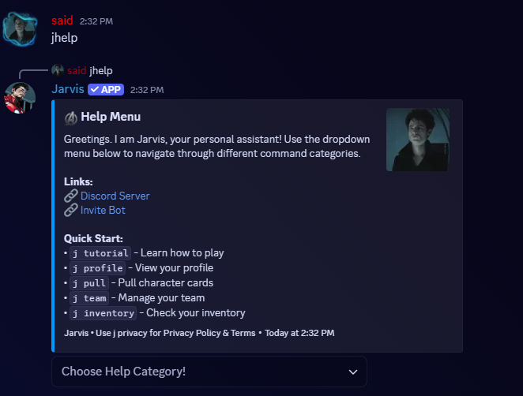
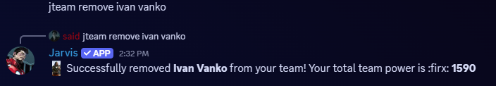
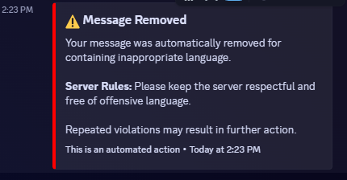
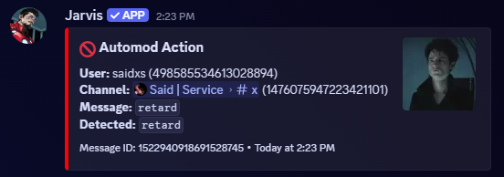
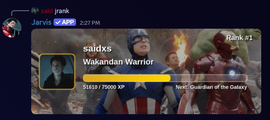
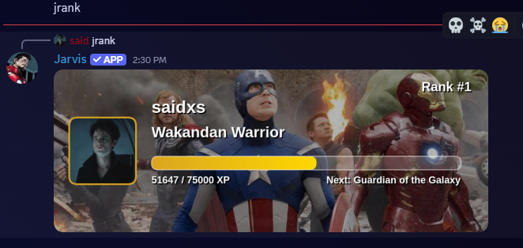
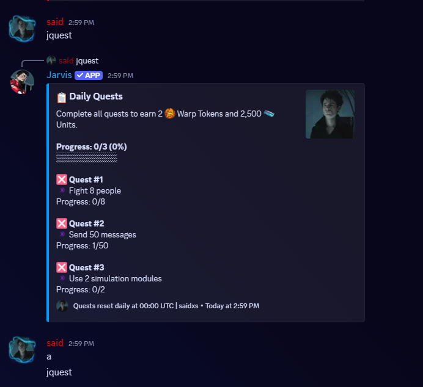
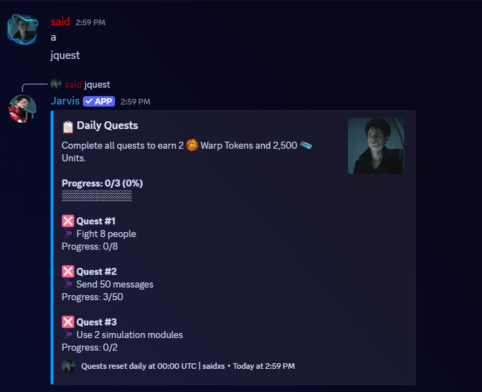

Jarvis Discord Bot
Message Content Intent evidence
These screenshots demonstrate Jarvis features that process message content inside Discord. The examples show the established prefix-command interface, argument parsing, restricted-channel automod, rank XP, and daily message-quest tracking.
1. Prefix command interface

jhelp opens the bot’s interactive help menu and lists established text commands.
2. Restricted-channel custom automod


3. Rank XP message processing


4. Daily message quest tracking


For processing, retention, service-provider and deletion details, see the Jarvis Privacy Policy.